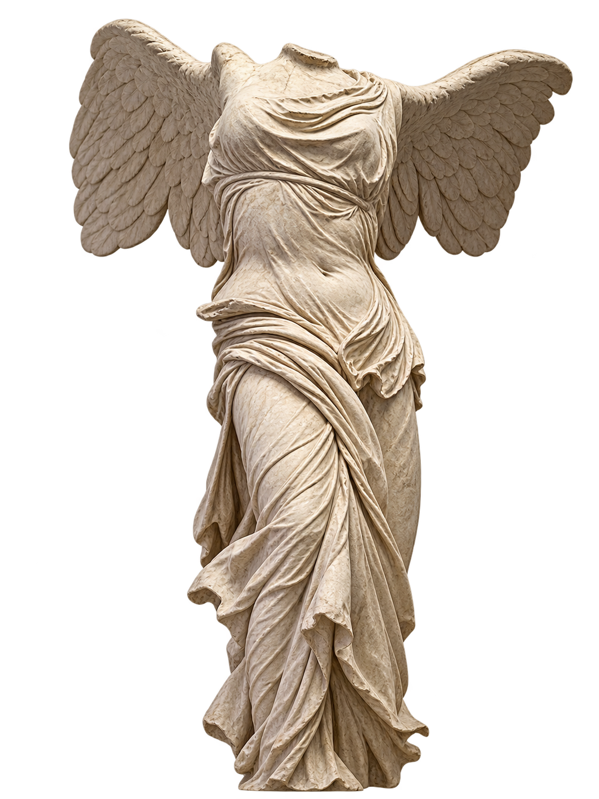

Recovery
The stolen
Works taken from museums, churches, homes and heritage sites, listed in public registries and waiting to resurface.
✦ Private Briefing · By Invitation
Found in fragments in 1863 and rebuilt piece by piece, she has never recovered her head or arms. Algorizma uses AI-assisted visual research to trace stolen and lost works of art, from looted antiquities to forgotten masterpieces hanging in ordinary rooms.

Our motto, in Arabic, Latin and English: نبحث عمّا فُقِد. Quaerimus quod amissum est. We seek what has been lost.
II The Lost Record
Some were cut from their frames. Others were simply forgotten: misattributed, inherited, hung in a hallway for a century. None of them ceased to exist. The trail is there. It is simply too vast, too scattered and too multilingual for any human team to read.
Today, finding them depends on a handful of specialists and a great deal of luck. Cases stay open for decades. Masterpieces sell for the price of decoration.
III Method
What once took a career of expertise and a lifetime of luck, Algorizma compresses into a single, repeatable investigation.
Every search begins with what is known: images, dimensions, provenance and the last confirmed sighting, assembled into one complete record of the missing work.
The engine reads across publicly available sources, in many languages and at a scale no human team could match.
Proprietary visual analysis surfaces candidates that resemble the work, even when cropped, reframed, restored or poorly photographed.
Every candidate is ranked, documented and reviewed by a person. Leads go to rightful owners, insurers or the proper authorities, never to the public.
Recovery
Works taken from museums, churches, homes and heritage sites, listed in public registries and waiting to resurface.
Rediscovery
Lost works by the masters, sitting unrecognised in attics, kitchens and provincial salerooms, often valued at a fraction of their worth.
IV The Case File
Our first investigation is underway. Its findings name places, sources and possibilities that cannot responsibly be published.
The complete Case File is opened only for committed patrons and investors, in private session and under confidentiality.
Disclosed only under confidentiality
V Why Privately
A public launch would alert the very people holding them, and invite careless imitators into a field where one clumsy search can drive a masterpiece underground for another generation.
In the search for forgotten masterpieces, the advantage belongs to whoever sees first. That advantage disappears the moment the method becomes common knowledge.
So before anything is announced, we are speaking with a small circle of patrons and investors, privately, by invitation.
Leads go to rightful owners, insurers and the proper authorities. We never act on a work ourselves.
Every lead is reviewed by a person before it leaves the house. The engine suggests; people decide.
Cases, sources and findings are never published. Each engagement is reviewed against the laws of every country involved.
VI The Founder
Founder · Algorizma
[Your story: two or three sentences on why lost art matters to you, and what moment started this.]
[Your background: what you have built or studied that makes you the person to do this.]
The first commission
The seed round funds our first specialist hires: investigators who verify every lead before it leaves the house, and who know how the art world really moves.
Advisor
[One line: who they are and why they matter.]
VII The Programme
Where we stand
A working prototype engine that generates investigative leads from public registries and sources.
Custom database foundation. Dedicated hardware. Wider source coverage.
First investigative art journalist hired. First verified lead files delivered.
A pilot with an insurer, auction house or recovery partner. Preparation for the next, larger round.
A share of the value recovered, as is customary in the field.
Licensed screening for auction houses, dealers and collectors before a work changes hands.
Finder’s and advisory fees on unrecognised works, and first sight for our partners.
Dedicated investigations for families, institutions and governments seeking specific works or heritage.
VIII Correspondence
Seed round
$100,000 – $150,000
Larger commitments are welcomed and discussed privately. The founding circle is deliberately small.
For those who support the search itself
For those who seek a stake in the outcome
Some works have waited centuries.
They will not wait for a public announcement.